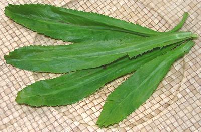

Culantro - Sawtooth Herb

[Long Coriander; Ngo Gai (Viet); Phak Chi Farang (Thai); Ji Ana (Khmer);
Cilantro Mexicano, Cilantro Habanero (Mexico); Alcapata (Guatemala,
El Salvador); Amazonian Chicory, Coentro-bravo, Coentro-largo (Brazil);
Recao (Puerto Rico); Bhandhanya (Hindi); Eryngium foetidum]
This herb is native to Mexico, Central and South America, but is now
grown worldwide. As a culinary herb it is most important in Southeast
Asia, the far northeast of India, and the Caribbean. It is sometimes
described as tasting like Cilantro, but stronger. I find the resemblance
detectable, but not close. Unlike Cilantro, it takes well to drying,
holding both color and flavor.
The photo specimens are up to 9-1/4 inches long and 1-1/2 inches
wide, but it can get up to at least 14 inches long and 2 inches
wide.
More on Parsleys, Aralias &
Pittosporums.
In Vietnam this is a favorite herb for tearing up and adding to
Pho Beef Noodle Soup. This herb can be used by people who have a
genetic defect causing them to reject Cilantro.
Buying & Storing:
This herb can be found fresh
in markets serving Southeast Asian communities, so is quite common
here in Los Angeles. It is also found in markets serving Caribbean
communities. The photo specimens were purchased from a large Asian
market in Los Angeles (San Gabriel) for $5.99 / pound, put up in
foam trays holding about 5 ounces. It is quite perishable and should
be used within a few days.
Subst:
Cilantro is the usual substitute, but it must
be used fresh, never dried, and it is not as strong.
py_culanz 160514 - www.clovegarden.com
©Andrew Grygus - agryg@clovegaden.com - Photos on
this page not otherwise credited are ©
cg1 - Linking to and non-commercial
use of this page permitted